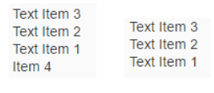

Aggregations
This sections shows you a use case for aggregations in the XML composite control.
If you would like to define an aggregation within a control used in the XML composite control, you proceed as usual:
sap.ui.define([
'sap/ui/core/XMLComposite'],
function( XMLComposite ) {
"use strict";
var TextList = XMLComposite.extend("fragments.TextList", {
metadata: {
aggregations: {
texts: {
type: "sap.ui.core.Item",
multiple: true
}
}
}
})
return TextList;
}, /* bExport= */true);
For this use case, the fragment definition XML file might now look like this:
<core:FragmentDefinition xmlns:m="sap.m" xmlns:core="sap.ui.core">
<m:VBox items="{$this>/texts}">
<m:Text text="{$this>text}" />
</m:VBox>
</core:FragmentDefinition>
In the items template of the VBox (in our case an sap.m.Text), we bind to the texts aggregation. As a result, a list of text items is rendered within a VBox.
You can see an example of how you can use the XML composite control in the following HTML file:
//add the TextList and place it in the page
var oTextList = new fragments.TextList();
oTextList.addText(new sap.ui.core.Item({text: "Text Item 1"}));
oTextList.addText(new sap.ui.core.Item({text: "Text Item 2"}));
oTextList.addText(new sap.ui.core.Item({text: "Text Item 3"}));
oTextList.addText(new sap.ui.core.Item({text: "Item 4"}));
oTextList.placeAt("body");
You can also use advanced features of ListBinding to display your data. For example, you can sort or filter your items, as the following examples show:
<core:FragmentDefinition xmlns:m="sap.m" xmlns:core="sap.ui.core">
<m:VBox items="{path:'$this>/texts', sorter:{path:'text', descending:true}}">
<m:Text text="{$this>text}" />
</m:VBox>
</core:FragmentDefinition>
<core:FragmentDefinition xmlns:m="sap.m" xmlns:core="sap.ui.core">
<m:VBox items="{path:'$this>/texts', filters:{path:'text', operator:'Contains', value1:'Text'}, sorter:{path:'text', descending:true}}">
<m:Text text="{$this>text}" />
</m:VBox>
</core:FragmentDefinition>
The result will look like this:

Sorting and Filtering UI